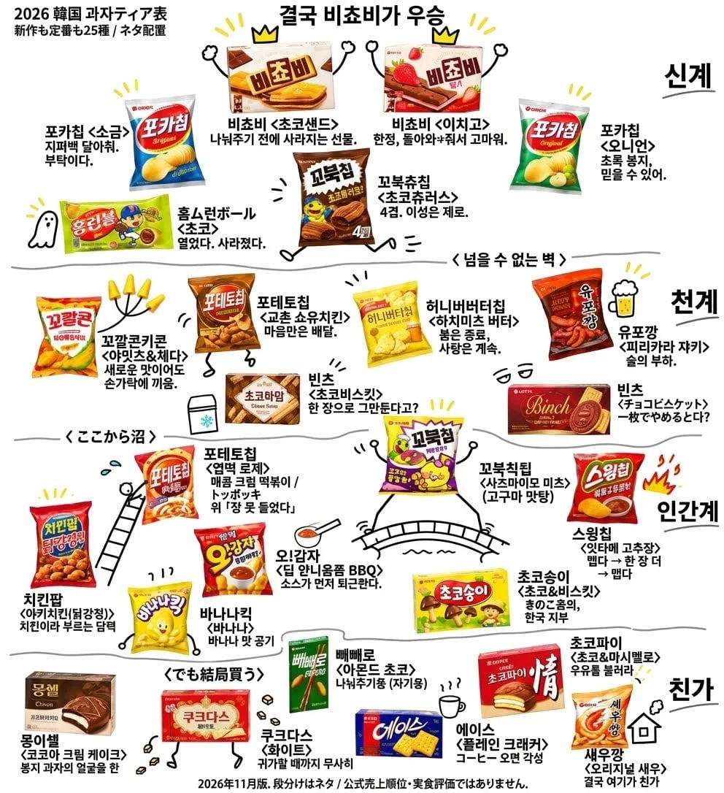

https://theqoo.net/square/4409784687

https://theqoo.net/square/4409784687

스윙칩이 맵다니
비쵸비는 식물성유지 쓴 짭초콜렛이고
이마트가면 피코크꺼 파는데
이게 진짜 맛있음
이름이?
초콜릿샌드위치비스킷
아니 니이름
왼쪽이 요아고 오른쪽이 소비입니다
이름이!?
이름이?
서울가서 사왔네요..
짭초콜릿은 초콜릿 이름 못쓰게 해야한다 ㄹㅇ
나 둘다 먹는데 의외로 이마트가 상위호환이아님. 재료는 이마트가 튼실한데 비쵸비가 비스킷과의 밸런스는 더 잘맞춰져있어
국제전의 비쵸비는 다르구만
그래그래.. 여기서 우승한걸로 만족하자 지훈아
육포깡 별로던데 입맛이 다른가봄
비초비보다 빈츠가 몇배는 더 맛있던데
비쵸비? ...... 에?
매운새우깡 없네 맛알못
쵸비... 여기선 우승 하길...
非쵸비라 여기서도...
비초비 빼고 니네 다 있는거아님?
페비쵸비!
어찌하여 짝퉁초콜릿 나라에서 초콜릿과자를..
일본에서 판매하는건 진짜 초콜릿일 확률이 높음 ㅋㅋㅋㅋ
몽쉘은 일본에 상위호환 개많더라 ㅋㅋ
뭔가 플라스틱같은 초코랑 크림의 매운느낌? 때문에 이젠 몽쉘 입에도 안댐
바나나맛 공기 왤캐 웃기지 ㅋㅋㅋ
단 ㅡ 홈런볼 초코하임 바나나킥
짠 ㅡ 썬갓
에이스 코 - 히 오면 각성 ㅋㅋㅋㅋㅋㅋ
오리온 매수할까?
비초비 슈퍼에 세금빼고 599엔임ㅜㅜ
스윙칩이 맵다는 거 보니 그쪽 매운맛 기준은 와사비가 끝인가 봄
비쵸비가 뭐임? 요즘 저런게나옴?
비쵸비가 개 맛도리긴 한데 넘 비쌈;;
비쵸비 걍 빈츠던데
일본 할머니는 뭐 좋아하나? 일본갈때마다 김이나 과자정도 드리는데 좋은거 있나
비쵸비 처음본다..
바나나킥이런취급받을것이아니다
비쵸비 <--- 내 돈으로 먹긴 아까운데 있으면 털어가는 과자